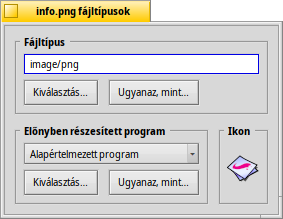
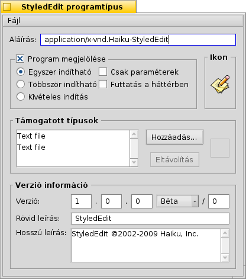

Magyar
Magyar Français
Français Deutsch
Deutsch Italiano
Italiano Русский
Русский Español
Español Svenska
Svenska 日本語
日本語 Українська
Українська 中文 ［中文］
中文 ［中文］ Português
Português Suomi
Suomi Slovenčina
Slovenčina Português (Brazil)
Português (Brazil) English
EnglishFájltípusok
A Windows-tól eltérően a Haiku-nál nem számít a 3 betűs kiterjesztés a fájlnál (például: .txt, .jpg, .mp3). A kiterjesztést a rendszer csak a végső esetben veszi figyelembe. A Haiku esetében a MIME típus a használatos, épp úgy, mint az interneten.
 Egy fájl típusának megadása
Egy fájl típusának megadása
Egy fájlnak a típusa, az ikonja, illetve a hozzá társított program is megváltoztatható. Ehhez csak ki kell jelölni a fájlt, és a kiegészítőt választani.

A fájl típusa
A fenti képen egy PNG fájl információit láthatjuk, aminek a MIME azonosítója image/png. Tegyük fel, hogy tudjuk, hogy ez egy GIF fájl és nem PNG. Ezt egyszerűen módosíthatjuk azzal, ha beírjuk a típus pontos nevét, vagy az alábbi két gombot használjuk:
| A fájltípusok hierarchikus listájában keressük meg az image | GIF Image típust. | ||
| Egy fájl ablakban keressünk egy olyan fájlt, aminek ugyan az a típusa, mint amit szeretnék adni a fájlnak.. |
Előnyben részesített program
Ez a menü tartalmazza azoknak a programoknak a listáját, amik kezelni tudják az adott fájlt. Itt kiválaszthatod azt a programot, ami automatikusan megnyílik, amikor duplán kattintunk egy fájlon. Lehetőséged van például a HTML fájlt egy böngésző helyett szövegszerkesztőhöz társítani. Minden HTML fájl továbbra is böngészőben nyílik meg, csak ez az egy fog szövegszerkesztőben.
Az az egyik, amit globálisan, minden fájlra be lehet állítani. Ha nem találod a listában a használni kívánt programot, akkor a és a gombok segítségével megadhatsz másikat is, épp úgy, mint "A fájl típusa" esetében.
Az ikon
Felmerülhet a kérdés, hogy miért üres az ikon helye a jobb felső részben: a fájlok általában a rendszerben beállított, a fájltípusnak megfelelő ikont használják. Arra is lehetőségünk van, hogy megnyitjuk a Fájltípus kiegészítőjét egy másik fájlnak is, majd az ikonját áthúzzuk a saját fájlunknak az ikonjához. Vagy, duplán kattintva az ikon mezőben létrehozhatjuk vagy szerkeszthetjük annak az ikonját. További információk az Icon-O-Matic fejezetben.
Programok speciális beállításai
Ha a Fájltípusok kiegészítőt egy programmal nyitjuk meg (esetünkben: StyledEdit), akkor az alábbi ablakot kapjuk:
A felső mezőben a szabványos MIME típus helyett a program aláírása (egyéni azonosítója) látható. Segítségével a rendszer könnyedén megtalálja a programot, bárhol is legyen az.
Ez alatt a program különféle megjelölései találhatóak, amik a program működését szabályozzák:
| A program (maga a programfájl) egy időben csak egyszer futhat. Azonban, ha a programnak több példánya is van, akkor azok persze futhatnak párhuzamosan. | ||
| A program többször is elindítható egy időben. | ||
| Kizárólag csak egy program futhat az adott program azonosítójával. | ||
| Ez az opció azt jelzi, hogy a program nem reagál semmilyen rendszer szintű üzenetre. | ||
| A program nem jelenik meg a Programváltóban vagy a futó programok listájában az Asztalsávon. |
Alább látható egy lista a programmal használható fájltípusokkal. Hozzáadhatsz (vagy törölhetsz) egy fájltípust, ha úgy gondolod, hogy az adott program tudja azt kezelni. Ennek eredményeként a program megjelenik az előnyben részesített programok listájában, vagy a Tracker listájában is, ha az adott típusú fájlon jobb gombbal kattintunk.
Végül pedig az ablak alján a verzió és a leírás, másolásvédelmi információ található. Mind a program aláírását (egyéni azonosítóját) is, ezt is a program készítője határozza meg, és nem ajánlott módosítani azt.
Általános beállítások a Fájltípusok beállítások panelen
A Fájltípusok beállítások esetében nem külön fájlonként, hanem általánosságban módosíthatóak a beállítások. Módosítható az ikon, az előnyben részesített program, hozzáadható, törölhető illetve módosítható egy egész fájltípus és annak a jellemzői. Továbbá egyéni fájltípust is létrehozhat.
Minden fájltípus és a hozzájuk tartozó beállítás a /boot/home/config/settings/beos_mime/ mappában található. Mielőtt módosítanád ennek a tartalmát, előtte mindenképp ajánlott róla készíteni egy másolatot...
További információkat találhatsz a Fájltípusok beállításairól a Műhely: fájltípusok, jellemzők, indexek és lekérdezések fejezetben.